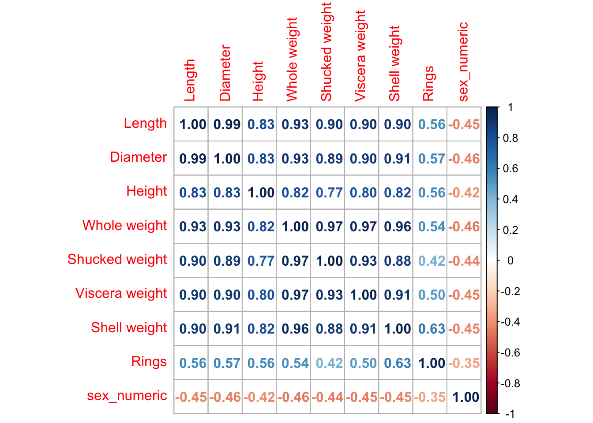

library(pacman)
p_load(tidyverse, boot, knitr, readr)Stat-641-project
Quarto
abalone <- read_csv("~/Desktop/Stat 641/Stat-641-project/abalone.csv")Rows: 4177 Columns: 9
── Column specification ────────────────────────────────────────────────────────
Delimiter: ","
chr (1): Sex
dbl (8): Length, Diameter, Height, Whole weight, Shucked weight, Viscera wei...
ℹ Use `spec()` to retrieve the full column specification for this data.
ℹ Specify the column types or set `show_col_types = FALSE` to quiet this message.head(abalone)# A tibble: 6 × 9
Sex Length Diameter Height `Whole weight` `Shucked weight` `Viscera weight`
<chr> <dbl> <dbl> <dbl> <dbl> <dbl> <dbl>
1 M 0.455 0.365 0.095 0.514 0.224 0.101
2 M 0.35 0.265 0.09 0.226 0.0995 0.0485
3 F 0.53 0.42 0.135 0.677 0.256 0.142
4 M 0.44 0.365 0.125 0.516 0.216 0.114
5 I 0.33 0.255 0.08 0.205 0.0895 0.0395
6 I 0.425 0.3 0.095 0.352 0.141 0.0775
# ℹ 2 more variables: `Shell weight` <dbl>, Rings <dbl>#summary(abalone)
abalone <- abalone %>%
mutate(
sex = factor(Sex, levels = c("M", "F", "I")), # Convert 'sex' to factor with 3 levels
sex_numeric = as.numeric(sex) # Convert factor to numeric
)
summary(abalone) Sex Length Diameter Height
Length:4177 Min. :0.075 Min. :0.0550 Min. :0.0000
Class :character 1st Qu.:0.450 1st Qu.:0.3500 1st Qu.:0.1150
Mode :character Median :0.545 Median :0.4250 Median :0.1400
Mean :0.524 Mean :0.4079 Mean :0.1395
3rd Qu.:0.615 3rd Qu.:0.4800 3rd Qu.:0.1650
Max. :0.815 Max. :0.6500 Max. :1.1300
Whole weight Shucked weight Viscera weight Shell weight
Min. :0.0020 Min. :0.0010 Min. :0.0005 Min. :0.0015
1st Qu.:0.4415 1st Qu.:0.1860 1st Qu.:0.0935 1st Qu.:0.1300
Median :0.7995 Median :0.3360 Median :0.1710 Median :0.2340
Mean :0.8287 Mean :0.3594 Mean :0.1806 Mean :0.2388
3rd Qu.:1.1530 3rd Qu.:0.5020 3rd Qu.:0.2530 3rd Qu.:0.3290
Max. :2.8255 Max. :1.4880 Max. :0.7600 Max. :1.0050
Rings sex sex_numeric
Min. : 1.000 M:1528 Min. :1.000
1st Qu.: 8.000 F:1307 1st Qu.:1.000
Median : 9.000 I:1342 Median :2.000
Mean : 9.934 Mean :1.955
3rd Qu.:11.000 3rd Qu.:3.000
Max. :29.000 Max. :3.000 abalone2 <- abalone %>%
select(-c(Sex, sex))
library(corrplot)corrplot 0.92 loaded# Calculate correlation matrix for abalone2
correlation_matrix <- cor(abalone2)
# Plot correlation matrix
corrplot(correlation_matrix, method = c("number"))
abalone3 <- abalone2 %>%
mutate(age = Rings + 1.5)
# Display the first few rows of the modified dataset
head(abalone2)# A tibble: 6 × 9
Length Diameter Height `Whole weight` `Shucked weight` `Viscera weight`
<dbl> <dbl> <dbl> <dbl> <dbl> <dbl>
1 0.455 0.365 0.095 0.514 0.224 0.101
2 0.35 0.265 0.09 0.226 0.0995 0.0485
3 0.53 0.42 0.135 0.677 0.256 0.142
4 0.44 0.365 0.125 0.516 0.216 0.114
5 0.33 0.255 0.08 0.205 0.0895 0.0395
6 0.425 0.3 0.095 0.352 0.141 0.0775
# ℹ 3 more variables: `Shell weight` <dbl>, Rings <dbl>, sex_numeric <dbl>library(tidyverse)
library(boot)
library(janitor)
Attaching package: 'janitor'The following objects are masked from 'package:stats':
chisq.test, fisher.testlibrary(knitr)
dat<-abalone
dat<-dat %>%
clean_names()
dat# A tibble: 4,177 × 11
sex length diameter height whole_weight shucked_weight viscera_weight
<chr> <dbl> <dbl> <dbl> <dbl> <dbl> <dbl>
1 M 0.455 0.365 0.095 0.514 0.224 0.101
2 M 0.35 0.265 0.09 0.226 0.0995 0.0485
3 F 0.53 0.42 0.135 0.677 0.256 0.142
4 M 0.44 0.365 0.125 0.516 0.216 0.114
5 I 0.33 0.255 0.08 0.205 0.0895 0.0395
6 I 0.425 0.3 0.095 0.352 0.141 0.0775
7 F 0.53 0.415 0.15 0.778 0.237 0.142
8 F 0.545 0.425 0.125 0.768 0.294 0.150
9 M 0.475 0.37 0.125 0.509 0.216 0.112
10 F 0.55 0.44 0.15 0.894 0.314 0.151
# ℹ 4,167 more rows
# ℹ 4 more variables: shell_weight <dbl>, rings <dbl>, sex_2 <fct>,
# sex_numeric <dbl>df_males_females<-dat %>%
select(sex,whole_weight) %>%
filter(sex%in% c("F", "M"))
df_males_females# A tibble: 2,835 × 2
sex whole_weight
<chr> <dbl>
1 M 0.514
2 M 0.226
3 F 0.677
4 M 0.516
5 F 0.778
6 F 0.768
7 M 0.509
8 F 0.894
9 F 0.606
10 M 0.406
# ℹ 2,825 more rowsmales <- df_males_females|>
filter(df_males_females$sex == "M")
females <- df_males_females|>
filter(df_males_females$sex == "F")
length(males$sex)[1] 1528test_stat <- mean(females$whole_weight) - mean(males$whole_weight)test_stat <- mean(df_males_females$whole_weight[df_males_females$sex == "F"]) - mean(df_males_females$whole_weight[df_males_females$sex == "M"])
test_stat [1] 0.05507271t_test_result <- t.test(whole_weight ~ sex, data = df_males_females)
t_test_result
Welch Two Sample t-test
data: whole_weight by sex
t = 3.2531, df = 2820.4, p-value = 0.001155
alternative hypothesis: true difference in means between group F and group M is not equal to 0
95 percent confidence interval:
0.02187753 0.08826789
sample estimates:
mean in group F mean in group M
1.0465321 0.9914594 cat("We can also see that the test statistic calculated using t.test",t_test_result$statistic, " is greater than the observed test statistic", test_stat)We can also see that the test statistic calculated using t.test 3.253089 is greater than the observed test statistic 0.05507271cat("The p value for the test statistic using welch two sample t-test",t_test_result$p.value, "which is < 0.05, so we reject the null hypothesis and say that there is difference in the means of the data")The p value for the test statistic using welch two sample t-test 0.001155041 which is < 0.05, so we reject the null hypothesis and say that there is difference in the means of the datacat("\nThe 95% values of mean difference in weights lies in the range of",t_test_result$conf.int)
The 95% values of mean difference in weights lies in the range of 0.02187753 0.08826789